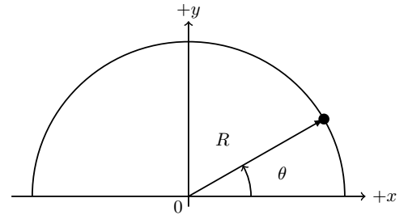
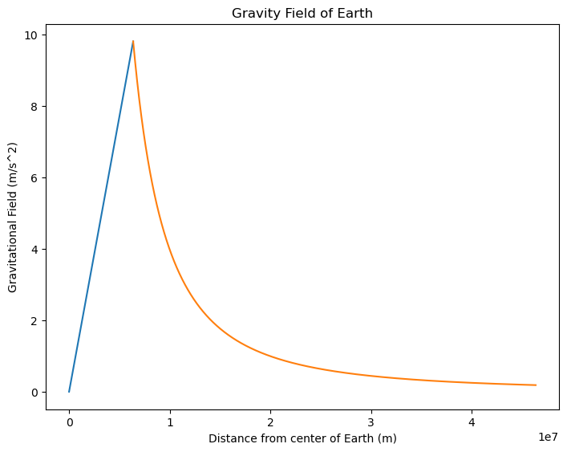

B1.4 Field Flux#
B1.4.1 Motivation#
As we have seen in University Physics I, we have four fundamental forces in physics due to the following interactions
gravity
electric
strong
weak
Every known force we encounter can be explained in terms of these four interactions and they all arise from what we know as field interactions. Hence, the fields are more fundamental than the force interactions. In University Physics I we encountered the gravitational field, but focused more on its interactions through Newton’s law. In University Physics II we are more concerned with the electric field and will need concepts associated with fields. The field flux, or simply flux, is such a concept.
The flux concept are essential to Gauss’s Law, which exist for both gravitational and electric fields. Since we are familair with Nerwtonian gravity, we will introduce the flux concept through the gravitational field.
B 1.4.2 Field Flux#
In general, the flux is defined in terms of a vector field passing through a surface per unit time. We can say that the flux is a measure of how much of a field quantity is passing through a given surface.
Example 1
Let us consider the gravitational flux through a letter–sized paper (8.5 in by 11 in) laying flat on your table. We will assume that the gravitational field is directed straight down with a field strength of \(g = 9.8\) m/s\(^2\). Since the field is present everywhere, the total flux through the paper is
We have previously labeled the acceleration of gravity at the Earth’s surface as \(g = 9.81\)~m/s\(^2\). However, we know that it changes as we move away from Earth. The objective of these notes is to learn how to calculate the gravitational field (the acceleration) as we move away from the Earth’s surface but also from other mass distributions that are not spherical.
The tool to perform these calculations is Gauss’s law for gravity (in PHYS2220 you will encounter Gauss’s law for electric and magnetic fields as well):
where \(\vec{g}\) is the gravitational field, \(d\vec{A}\) is an area element with a direction pointing out of the closed surface, known as the Gaussian surface, that we are integrating over (the circle on the integration symbol indicates that we are integrating over a closed surface), \(G\) is a constant known as the universal constant of gravity, and \(m_{enclosed}\) is the mass that is inside the closed surface. We can understand the \(m_{enclosed}\) to be the source of the gravitational field.
We can re-write the integral in terms of the vector magnitudes using the definition of the dot product:
where \(\theta\) is the angle between the gravitational field and the area vector (unit vector pointing out of the closed surface).
For a spherical symmetric source such as the Earth (the blue planet in the Figure below), the obvious surface to integrate over is a sphere. Any point on the sphere is the same distance away from the source and the field strength is therefore the same at any point on the sphere (\(g = constant\)). Furthermore, since the normal area element \(d\vec{A}\) is pointing away from the sphere, the angle between \(\vec{g}\) and \(d\vec{A}\) is \(180^\circ\).

Consider the Earth to be a perfect sphere. Imagine we are enclosing a closed spherical surface encapsulating the Earth. Using equation 1, show that the gravitational field at the surface of the Earth or outside the Earth is
where \(M_{Earth}\) is the mass of the Earth (the mass inside the imaginary Gaussian sphere) and \(r\) is the distance away from the center of the Earth (the radius of the Gaussian sphere) with the condition that \(r \geq R_{Earth}\). The surface area of a sphere with radius \(r\) is \(A_{sphere} = 4\pi r^2\).
Use your result from Box 1 to calculate the acceleration of gravity at the surface of the Earth. Use $G = 6.67 \times 10^{-11}$ Nm$^2$/kg$^2$, mass of Earth ($M_E = 5.97 \times 10^{24}$ kg), and radius of Earth ($R_E = 6.37 \times 10^6$ m).
Use your result from Box 1 to calculate the acceleration of gravity on the international space station (its altitude above surface of the Earth is $\sim 400$ km). Use $G = 6.67 \times 10^{-11}$ Nm$^2$/kg$^2$, mass of Earth ($M_E = 5.97 \times 10^{24}$ kg), and radius of Earth ($R_E = 6.37 \times 10^6$ m).
Use your result from Box 1 to calculate the acceleration of gravity on a geostationary satellite (its altitude above surface of the Earth is $\sim 40,000$ km). Use $G = 6.67 \times 10^{-11}$ Nm$^2$/kg$^2$, mass of Earth ($M_E = 5.97 \times 10^{24}$ kg), and radius of Earth ($R_E = 6.37 \times 10^6$ m).
Show that the gravitational field inside the Earth is
where \(M_E\) is the mass of the Earth, \(R_E\) is the radius of the Earth, and \(r\) is the distance from the center of the Earth to the point of interest (\(r < R_E\)). HINT: Write the density of the Earth as \(\rho = \frac{M_E}{\frac{4}{3}\pi R_{E}^{3}}\) and use that to find the mass enclosed inside the Gaussian surface.
Summarize the above boxes by writing down two equations: one for the gravitational field outside the surface of the Earth and one for the gravitational field inside the Earth.
Make a plot of the gravitational field of the Earth ranging from $r = 0$ to $r = 400,000$ km (the approximate distance to the moon) using a code box below here. I have made a template code but you will need to enter the equstions. If you need further help, let me know!
# Template code for making a plot
#import functions we will need
from matplotlib import pyplot as plt
import numpy as np
#given constants
G = 6.67E-11
M_E = 5.97E24
#create a list/array of r-values for both inside and outside the Earth
R_E = 6.37E6
r_in = np.arange(0,R_E,1000)
R = R_E + 4.0E7
r_out = np.arange(R_E,R,1000)
########### INSERT YOUR TWO EQUATIONS HERE ###############
g_in = G*M_E*r_in/R_E**3
g_out = G*M_E/r_out**2
##########################################################
#set up plotting environment
# UNCOMMENT EVERYTHING BELOW TO CREATE THE PLOT
fig = plt.figure()
ax = fig.add_axes([0,0,1,1]) #fit to plotting canvas
ax.plot(r_in,g_in)
ax.plot(r_out,g_out)
ax.set_title('Gravity Field of Earth')
ax.set_xlabel('Distance from center of Earth (m)')
ax.set_ylabel('Gravitational Field (m/s^2)')
Text(0, 0.5, 'Gravitational Field (m/s^2)')
